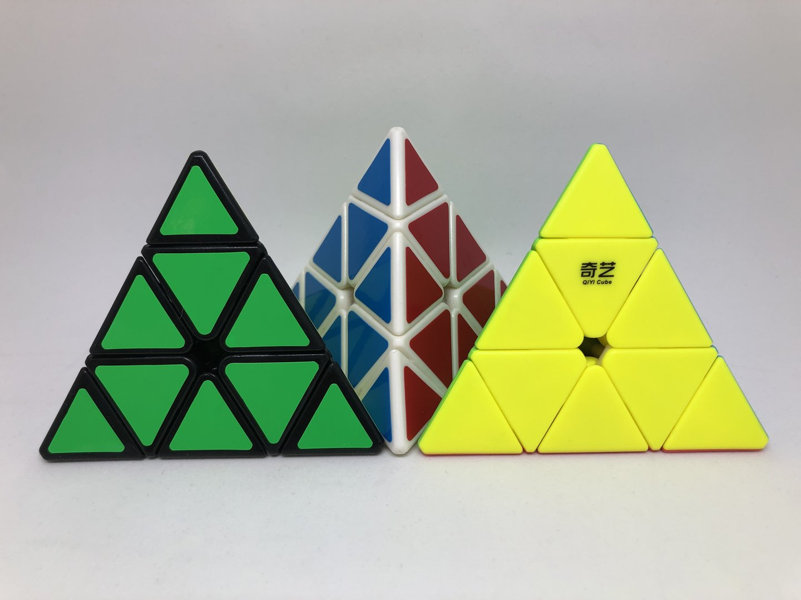

Pyraminx:Solution and solvability

Our project is 3 layer-Pyraminx which is a twisty, tetrahedron puzzle with triangular face. It was made and patented by Uwe Meffert and introduced by Tomy Toys in 1981.
Our main focus will be based on group theory. We will talk about possible moves, impossible moves and solving technique.
Goal:
The final goal of this puzzle is to put all blocks which are same coloured in same face. In this case, our four colours are red, yellow, blue and green.
Basic notation:
Pyraminx is simple. It has only four notations, U R L F/B.
Every notation means turn the first two directional layers in clockwise direction for 120 degrees.
Credit to:
Update: Nov/25/2019
Detail: Paragraph draft